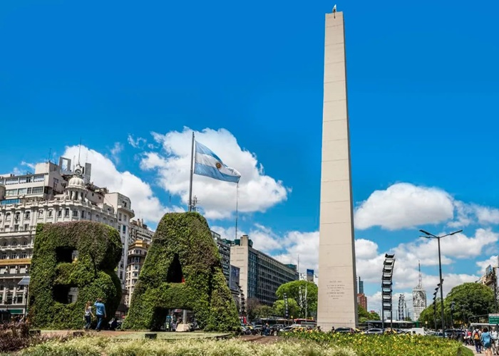
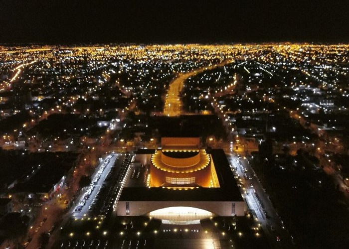

 Fin de semana en Bs.As. 1 100% accesible Paseo por jardín japonés, 1 función en teatro colón, estadía en hotel buenos vientos son los sitios destacados de esta opción. Precio: U$S 150 ver mas
 Fin de semana en Bs.As. 2 100% accesible Museo nacional de bellas artes, paseo por la boca y estadía en el hotel Glamour son los sitios destacados de esta opción. Precio: U$S 200 ver mas
Escapada romántica 100% accesible Estadía en hotel y spa silg voug plett, Museo nacional del amor y parque rosedal son los sitios destacados de esta opción. Precio: U$S 420 ver mas